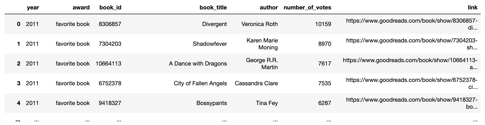
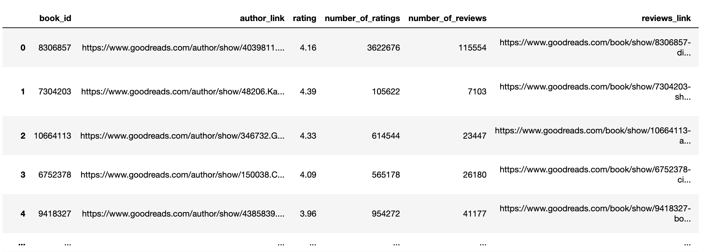
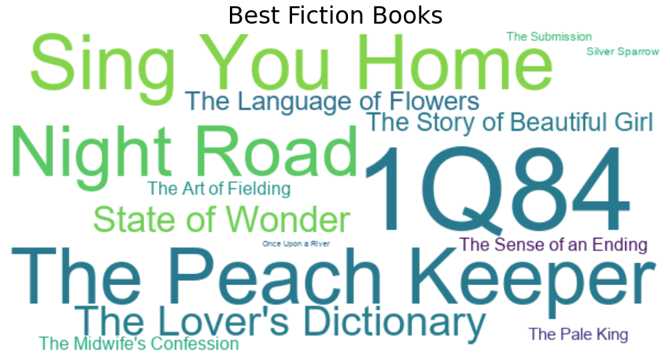

Web Scraping & Dashboard | Python, Tableau
Project Description
The project was aimed to scrape all the books that won the Choice Awarded on GoodRead.com and build a book selection dashboard for book lovers to choose the books and authors by awards, year, and ratings for their next reading.
Project Details
Retrieved 4000+ awarded book information from the website and saved to two csv files containing awards and book details using Beautiful Soup, Selenium, and pandas.
Replaced values, split/added/renamed/dropped columns, and dropped duplicated values using pandas.
Explored awarded books and authors through data manipulation and visualization using pandas, matplotlib, and word cloud.
Built interactive dashboard to filter popular books and authors by year and award using Tableau.
DataFrame
Awarded books dataframe
Book details dataframe
Word cloud
Python wordcloud library was used to create the word clouds.
The screenshot below shows the books that won the 'Best fiction' award in 2011 that has ratings above 3.5.
Tableau Dashboard
The screenshot below shows the top books and authors winning the 'Best fantasy books' award with the rating above 4.5 in 2022